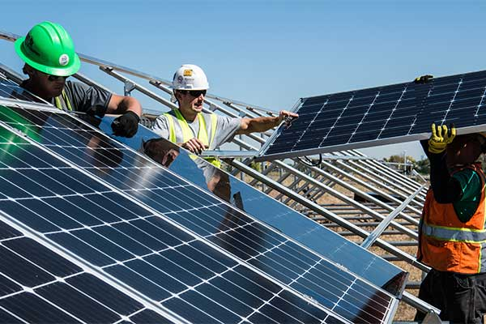
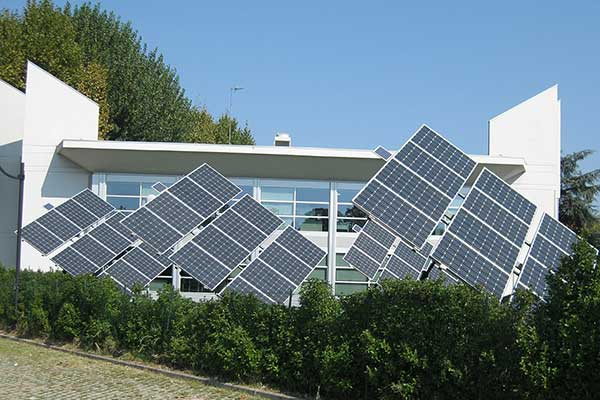
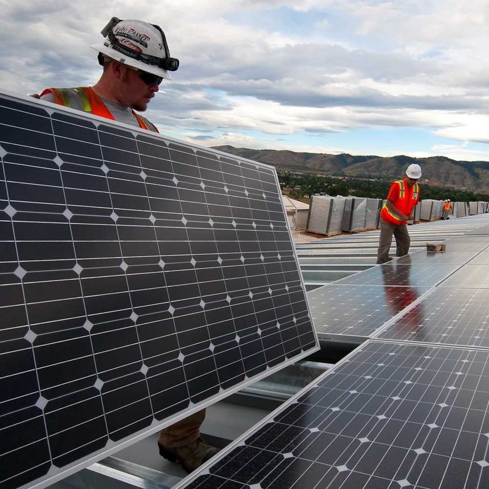

Biogas and Clean Cooking
Biodigesters that convert organic waste, including animal manure, into biogas and biofertilizer.
Read moreBiogas and solar energy solutions for households, farmers, businesses and communities in Mozambique.

Biodigesters that convert organic waste, including animal manure, into biogas and biofertilizer.
Read more
Essential energy for lighting and mobile-phone charging in areas with limited grid access.
Read more
Responsible use of digestate to support soils, crops and livelihoods.
Read more
Wastewater treatment systems for homes, residential developments, institutions, farms, and commercial and industrial facilities.
Read more
Every project starts with the real site: available resources, operating capacity, energy needs, water, safety and maintenance planning.
Practical regional experience with biogas and solar solutions in Southern Africa.
Site assessment before recommending technology, size or investment.
User training, after-sales planning and operating follow-up.
Careful communication: no savings, yield or impact claims without verification.
Lighting, phone charging and clean-cooking options where conditions are suitable.
Manure management, energy for cooking or simple processes and responsible biofertilizer use.
Projects with training, maintenance and monitoring from early design.
Programme co-design, technical assessment, reporting and follow-up cycles.
A circular model can improve waste management and support agriculture when technical and operating conditions are suitable.
Impact measurement should begin with verified baselines. Public metrics should be published only when results are confirmed.
Share your location, needs and project stage so we can assess the right next step.